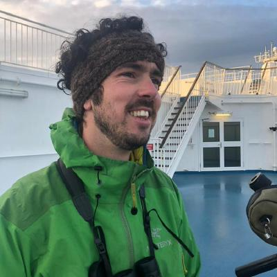

I use population genomics and phylogenomics to study the evolutionary history of birds, with a particular interest in seabirds. I am especially interested in local adaptation and the genetic basis of complex traits such as migratory behaviour, combining genomics with ecological data.
I am a postdoctoral research associate in the Bird Genoscape Project at Colorado State University, working with Kristen Ruegg on the genomics of local adaptation and migration in North American birds. Before that I was a postdoc at the University of Milan with Diego Rubolini, and I did my PhD at the University of Barcelona with Marta Riutort and Julio Rozas on the evolutionary history of shearwaters.
Most of my work starts in the field. I hold bird ringing licences in Spain and the USA, and I spent fourteen months as a zoological field assistant on the Kerguelen Islands.